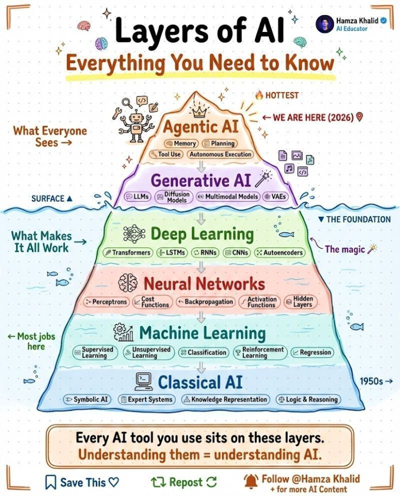

Les capes de la intel·ligència artificial
Una visió de les principals famílies de la IA, des dels sistemes simbòlics fins a la generativa i els agents. La infografia ajuda a situar les aplicacions actuals dins d'un conjunt més ampli de tècniques d'aprenentatge, representació del coneixement i automatització.
Hamza Khalid · Layers of AI
Font →